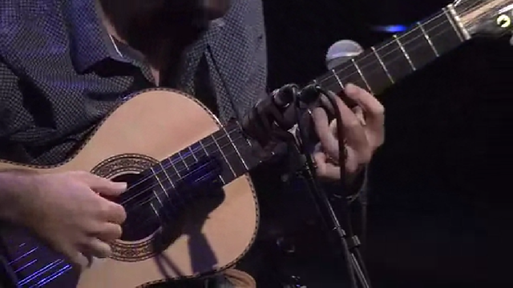

Violão - Viola - Guitarra

clássica
new age
progressivo
smooth
🏖️ choroMpb bossaNova
🎹 🎺 bluesJazz
🗣️vocal
👥coro
📺️ tv filme série
🎮️ game
⚔️ militar
👻️
🥁️
🔔️
🕌️🌇️🕍️⛪️⛩️🌉️
🕎️✡️✝️🛐️☪️
⚡ elet
🎸️progressiveRock
🎷 smoothJazz
minimal
concreta
serial
kraut
world
ambientMusic
funk
electroFunk
r&b
rockAndRoll
soulMusic